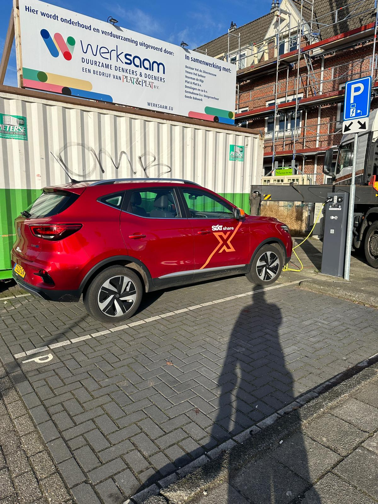

Sixt Share is een carsharing-service van Sixt, waarmee gebruikers via een mobiele app auto's kunnen huren voor korte periodes, vaak per uur of per dag.
Mijn ervaring
Als frequente reiziger in Amsterdam maak ik graag gebruik van Sixt Share, de carsharing-service van Sixt. De intuïtieve mobiele app biedt ongeëvenaarde flexibiliteit voor snelle autoreserveringen en ophalen, wat vooral handig is in de dynamische stad.
Duurzame Keuze
Sixt Share's indrukwekkend milieuvriendelijke wagenpark, met moderne voertuigen en elektrische/hybride opties, benadrukt hun betrokkenheid bij duurzame mobiliteit. Ondanks soms uitdagende beschikbaarheid tijdens piekuren, blijft Sixt Share voor mij aantrekkelijk en duurzaam voor stadsreizen in Amsterdam, dankzij de combinatie van flexibiliteit en milieubewustheid.
Sixt Share-app
De Sixt Share-app maakt het reserveren en oppikken van auto's makkelijk met een handige interface. Dankzij realtime voertuigtracking hoef ik minder lang te wachten en wordt mijn hele ervaring beter, ook al zijn er soms wat minpuntjes zoals beperkte beschikbaarheid op drukke momenten en soms wat trage reacties.